Next: 2.3 An Example
Up: 2 An introduction to
Previous: 2.1 Problem, Elemental and
2.2 Element and Group Types
It is quite common for large nonlinear programming problems to be
defined in terms of many nonlinear elements.
It is also common that these elements, although using different
problem variables, are structurally the same as each other. For
instance, the function
naturally decomposes into the sum of  group functions,
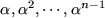.
Each group
is a nonlinear element function
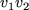 of the two elemental variables
group functions,
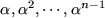.
Each group
is a nonlinear element function
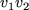 of the two elemental variables
 and
and  evaluated for different pairs of problem
variables.
More commonly, the elements may be arranged into a few
classes; the elements within each class are structurally the same.
For example, the function
evaluated for different pairs of problem
variables.
More commonly, the elements may be arranged into a few
classes; the elements within each class are structurally the same.
For example, the function
naturally decomposes into the sum of the same 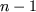 group functions.
Each group is the sum of two nonlinear elements  (where 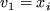 and 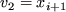) and 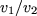 (where
(where 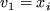 and 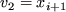) and 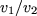 (where  and 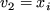).
A further common occurrence is the presence of elements which have the
same structure,
but which differ in using different problem variables
and other auxiliary parameters.
For instance, the function
and 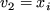).
A further common occurrence is the presence of elements which have the
same structure,
but which differ in using different problem variables
and other auxiliary parameters.
For instance, the function
naturally decomposes into the sum of the same  group functions.
Each group is a nonlinear element
group functions.
Each group is a nonlinear element
 of the single parameter
of the single parameter
 and two elemental variables
and two elemental variables
 and
and  evaluated for different values of the
parameter and pairs of problem variables.
Any two elements which are structurally the same are said to be of the
same type.
Thus examples (2.12) and (2.14) use a single element type,
where as (2.13) uses two types. When defining the data for
problems of the form (2.1)-(2.4), it
is unnecessary to define each nonlinear element in detail. All that is
actually needed is to specify the characteristics of the element types
and then to identify each
evaluated for different values of the
parameter and pairs of problem variables.
Any two elements which are structurally the same are said to be of the
same type.
Thus examples (2.12) and (2.14) use a single element type,
where as (2.13) uses two types. When defining the data for
problems of the form (2.1)-(2.4), it
is unnecessary to define each nonlinear element in detail. All that is
actually needed is to specify the characteristics of the element types
and then to identify each  by its type and the indices of its
problem variables and (possibly) auxiliary parameters.
by its type and the indices of its
problem variables and (possibly) auxiliary parameters.
The same principal may be applied to group functions.
For example, the group functions that make up
have different arguments but are structurally all the same, each being
of the form
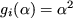. As a slightly more general
example, the group functions for
have different arguments and depend upon different values of a
parameter
but are still structurally all the same, each being of the
form
 for some parameter
for some parameter  . Any two
group functions which are structurally the same are said to be of the
same type; the structural function is known as the group
type
and its argument is the group-type variable.
Once again, using group types makes the task of specifying the
characteristics of individual group functions
more straightforward.
The group type
. Any two
group functions which are structurally the same are said to be of the
same type; the structural function is known as the group
type
and its argument is the group-type variable.
Once again, using group types makes the task of specifying the
characteristics of individual group functions
more straightforward.
The group type
 is known as the trivial
type.
Trivial groups occur very frequently and are considered to be
the default type.
It is then only necessary to specify non-trivial group types.
is known as the trivial
type.
Trivial groups occur very frequently and are considered to be
the default type.
It is then only necessary to specify non-trivial group types.
Next: 2.3 An Example
Up: 2 An introduction to
Previous: 2.1 Problem, Elemental and